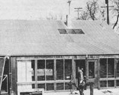
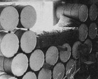
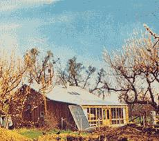
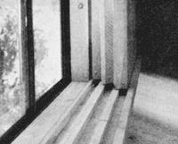
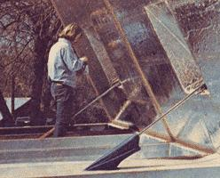
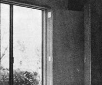
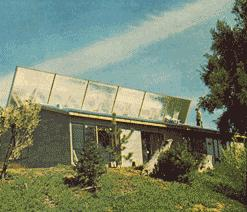

Jon Hammond: Another Quiet Solar Energy Pioneer
By David Bainbridge
November/December 1975
The big corporations and government agencies get the headlines every time they announce another improbable megabuck "solution" to the "energy crisis" . . . but, so far, it's the little guys who've been building the hardware that works.
Little guys such as Steve Baer and Harold Hay, both of whom have shown that a house can be quite satisfactorily solar heated in the winter and solar cooled during the summer . . . with nothing more than drums or "beds" of water and a few movable, insulated wall or roof panels.
And now there's a third little guy out in Winters, California who's quietly using Baer's and Hay's ideas to push back alternative energy frontiers of his own.
Jon Hammond was born 31 years ago in Richmond, California and-a couple or three years back-found himself with a bachelor's degree in landscape architecture, a master's in ecology . . . and working as a teaching fellow at the University of California at Davis. It was then, thanks to his degrees and his experience in his chosen fields, that the city of Davis asked Jon to help prepare an official energy conservation policy for the town.
Hammond-along with Marshall Hunt, Lauren Neubauer, and Dick Cramer-set to work on the project with a clean sheet of paper and a right good will. And eventually, after much soul searching and exhaustive research, they brought forth a milestone study entitled A Strategy for Energy Conservation: Proposed Energy Conservation and Solar Utili z ation Ordinance.
Much of the report dealt with simple "we can do it now" ideas that the residents of Davis could use immediately to make their homes, their neighborhoods, their whole town more pleasant and more energy efficient. That part of the study alone was more than worth the effort which went into it. Still, in many readers' opinion, the real zinger in the new Davis ordinance is the chapter on solar energy prepared (at Hammond's request) by Steve Baer.
Jon had met Steve a few years before while filming a movie about the "alternative architecture" which was then springing up all over New Mexico. Since Baer at that time was deeply involved in the Albuquerque area with the design and construction of domes (and his own zomes) from such unlikely materials as junked car tops, it was inevitable that Hammond would become acquainted with Steve's work.
Baer's super-simple experiments with solar energy ("put something black out in the sun and it'll get hot") particularly fascinated Hammond. So much so, in fact, that-once the city of Davis had assigned him the job of drawing up the new energy ordinance-he immediately asked Steve to contribute his ideas about harnessing the sun for household heating and cooling.
Steve Baer's chapter in the report explored three relatively simple and low-cost solar systems that, in his opinion, were especially suited to the Davis area: [1] the "drum wall" heating/air conditioning design that Baer had installed in his own Corrales, New Mexico home (see MOTHER NO. 22), [2] a modified version of the Harold Hay "water bed on the roof' heater/cooler, and [3] a "rock loop" setup.
And that, finally, was the undoing of Jon Hammond. Because, after reading Baer's chapter, Jon knew he just had to start building some solar heating/cooling systems of his own.
Hammond began with the old farmhouse that he and his wife lived in. "We completely renovated the place" he says. "Resided, reroofed, and insulated it. We put insulated shutters on the windows too. And then we replaced the whole south side of the building with a drum wall."
All in all, the Hammonds spent approximately $10,000 remodeling the frame house. Only a small portion of that amount was directly paid out for the solar heating system, however, since one of the main components of the setup-the barrels-was obtained free.
Jon estimates that his renovated dwelling now derives about 80 to 90% of its winter, heat from the sun. "We haven't run any really controlled tests on the place," he says, "but I can tell you this: Two winters ago-before the conversion-we kept both a gas heater and a Franklin fireplace stoked up to maximum output all the time, and we never were comfortable. We just couldn't keep warm. Last winter, though-after the remodeling and without the gas heater at all-we were always warm . . . and we only burned one-third of a cord of wood in the Franklin. We hardly used the fireplace except for December and January and the last blaze we needed at all was on February 6!"
Inspired by his success, Hammond let it be known that he was available to plan and/or construct other energy-conserving and sun-tempered buildings. It wasn't long before a Davis professor of the history of technology asked him to design a solar-heated and -cooled house from the ground up.
"We used a modification of Harold Hay's Sky Therm on that one," Jon says. "The system is nothing but some big, galvanized steel tanks built right into the ceilings of the main rooms. The containers hold 300 cubic feet-seven tons-of water and are covered by thin sheets of plastic. They're either exposed to the sun and the outside atmosphere or protected from them by raising and lowering a large section of the building's roof like a big lid. In addition, the bottom of that lid acts as a huge reflector, to direct even more sunlight onto the water when the roof is up."
How well the Sky Therm radiates warmth into the rooms below during cold weather remains to be seen (Jon figures the house will be 95% solar heated), but the system has already proven it can "air condition" the professor's house during the summer. At the end of a three-day spell of 105° F weather last July, the interior of the building registered a peak of only 74°. Later in the season, two solid days of 112° outside brought the inside temperature up to just 78°. "It was like walking into a refrigerator whenever you entered the place!"
That's not bad for a 1,200-square-foot house costing $27,000. With gas, oil, and other fuels now high and going higher, this residence will pay for itself in energy savings alone within a very few years!
Well. As the song goes, "When you're hot, you're hot." And Jon Hammond's work with solar systems is certainly sizzling right now. So much so that Jon currently operates a consulting firm, Living Systems, out of his home.
One of the company's main projects at present is the design of a solar house for some folks in Chico, California. It's also planning a "mass production" sun-heated and -cooled residence for a Davis contractor and expects soon to be awarded HUD funding for the development of a couple of "low-cost, energy conserving" homes that eventually will be erected in Davis. ("We're gonna make 'em more than energy conserving," says Jon. "We're gonna solar heat 'em too.") And, during its spare time, Living Systems is doodling up a "partly underground, solar-heated" workshop for itself.
In addition to all these specific projects, Hammond's consulting firm still finds time to handle the larger analyses that got Jon into the house designing business in the first place. Living Systems has been retained to do a version of the Davis ordinance for both Indio and Chico, California . : . and the company recently completed a most interesting study of a proposed nuclear installation for the city of Sacramento.
"They want to spend one billion dollars putting that nuclear plant in," says Jon, "and they claim that they've just got to have it. Yet our analysis shows that if we spend $2,000 on every residence in Sacramento to make the town more energy conserving, we can save as much power as that plant will ever generate . . . at a total cost of only half a billion! We've got to quit thinking that the answer is always more."
After two and half years of grappling with energy problems on both a general and a very specific scale, Jon Hammond now firmly believes that we can run our homes on no more than 10 to 20% of the power they now consume. "And that's only the beginning. We can make our towns and our cities resource- and energy-efficient too. We can rebuild them to a human scale, fine-tune them to local climates and resources, and make them self-sufficient . . . at least on a regional basis. And in the process, as painful and difficult as it will be, we may even discover ourselves."
If you'd like more of Jon Hammond's thoughts, you can order a copy of A Strategy for Energy Conservation for $6.00 from Living Systems, Rt. 1, Box 170, Winters, California 95654. Jon will also be happy to discuss the possibility of acting as a consultant in the design of energy conserving buildings and solar systems. Remember, however, that he's a Good Guy operating on limited resources out of an office in his home. Any letters of inquiry to either Jon or Living Systems should include a buck or two for return postage and the privilege of an answer.
Related Articles
Solar Heating and Cooling Guidelines for Windows
The Original "Sky Therm" by Harold Hay
Steve Baer's Original "Drum Wall"
|
 The Hammond house (note drum wall, shutters, and skylight) |
 Jon's waterbed, snuggled in among the heat-absorbing drums. |
 Another view of the Hammond house, showing the solar water heater attached to the home's south wall (in foreground). |
|
 Insulated shutters, a highly effective temperature control. |
 A hydraulic lifting mechanism controls the Sky-Therm's lid. |
 Hammond at work on the lid of the solar house's roof unit. |
|
 Folding insulated shutters, ideal for use in solar homes. |
 On sunny winter days, the tank's cover is raised?as in the photo above?to allow the black water containers to absorb energy. |
|